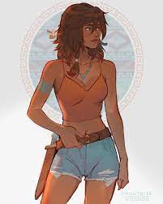

Percy Jackson

Percy Jackson is a demigod, the son of the mortal Sally Jackson and the Greek god Poseidon. He has ADHD and dyslexia, allegedly because he is hardwired to read Ancient Greek and has inborn "battlefield reflexes".Percy's birthday is August 18.
Nico Di Angelo
Nico di Angelo, is an Italian-born Greek demigod who is the son of the Greek God Hades and the Italian mortal Maria di Angelo. He is 10 years old in his first appearance in The Titan's Curse in Percy Jackson & the Olympians and 14 years old in his latest appearance in The Sun and the Star in The Nico di Angelo Adventures.
Jason Grace

Jason Grace was the Roman demigod son of Jupiter (Roman God of the Sky) and the late actress Beryl Grace, the younger brother of Thalia Grace (whom Beryl had with Jupiter's Greek form Zeus), the former co-praetor of Camp Jupiter, the Counsellor of Cabin 1 at Camp Half-Blood.
Thalia Grace
Thalia Grace, daughter of Zeus, sister of Jason Grace; was turned into a pine tree to save her life, later resurrected, and now leads the Hunters of Artemis after defying Kronos. She stands as a fierce protector of Camp Half-Blood and a loyal servant of the goddess Artemis.
Leo Vladez
Leo was born in Houston, Texas, to the mechanic Esperanza Valdez, and the blacksmith god Hephaestus. Unlike most of his half-siblings, Leo has the rare ability to control fire. He is the first child born of Hephaestus to be able to control fire in centuries.
Annabeth Chase

Annabeth Chase is the Greek demigod daughter of Athena and Professor Frederick Chase, and the paternal cousin of Norse demigod Magnus Chase. She is the deuteragonist in Percy Jackson and the Olympians series and is a main character in The Heroes of Olympus series, as she is one of the Seven demigods of the Prophecy of Seven. Annabeth is the architect of Olympus and the former head counselor of Athena's cabin.
Piper McLean
Piper McLean is the Greek demigod daughter of Aphrodite and Tristan McLean. She is the Head Counselor of Aphrodite's Cabin and one of the demigods of the Prophecy of Seven.
Frank Zhang

Frank Zhang (also known as Fai Zhang by his Grandmother) is the Roman demigod son of Mars and Emily Zhang, as well as a legacy of Poseidon. Frank is one of the seven demigods mentioned in the Prophecy of Seven and is a Praetor of the Twelfth Legion Fulminata.
Hazel Levasque
Hazel Levesque is the Roman demigod daughter of Pluto and the late Marie Levesque, and the paternal half-sister of Greek demigods Bianca and Nico di Angelo. She is one of the seven heroes of the Prophecy of Seven. She is the current Praetor of Camp Jupiter following the retirement of Reyna Ramírez-Arellano, and the former Centurion of the Fifth Cohort.
Reyna Ramírez-Arellano
Reyna Avila Ramírez-Arellano is a Roman demigod, the daughter of Bellona, younger sister of the current Queen of the Amazons, Hylla. She is a former praetor of Camp Jupiter, and is currently a Hunter of Artemis.